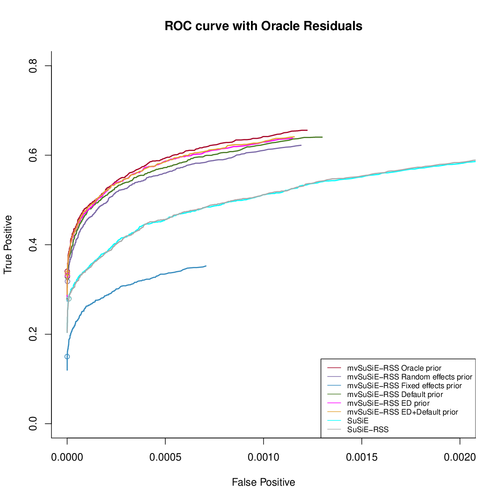
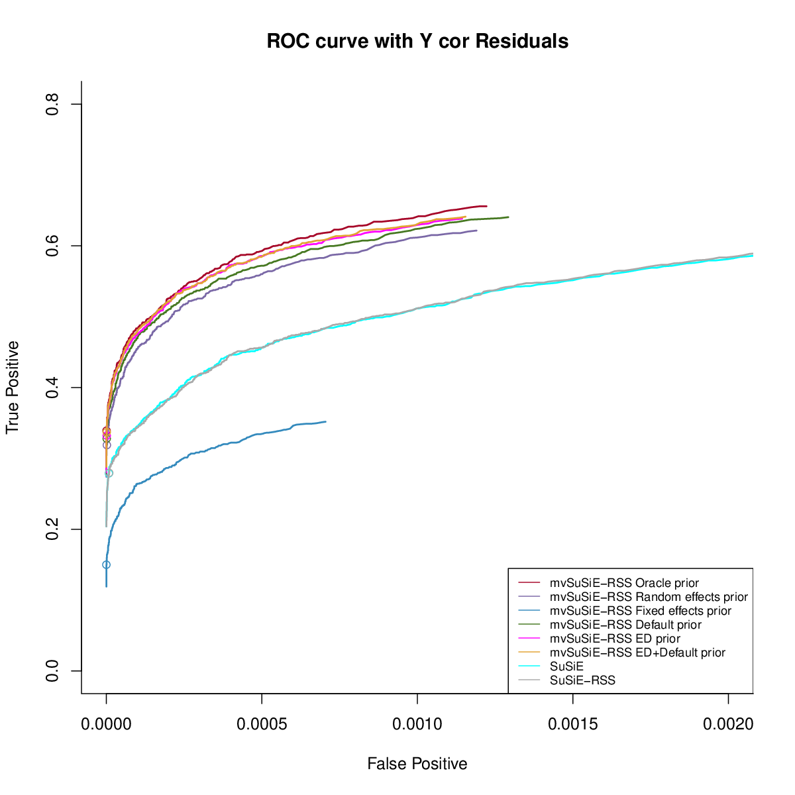
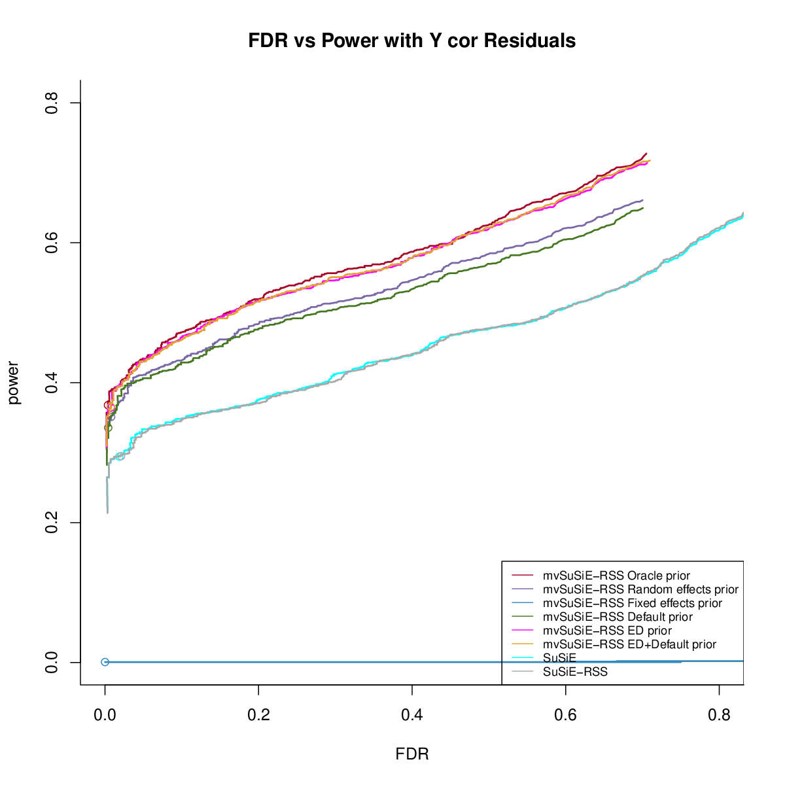
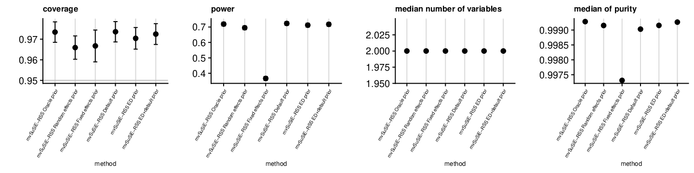
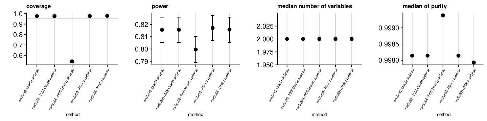
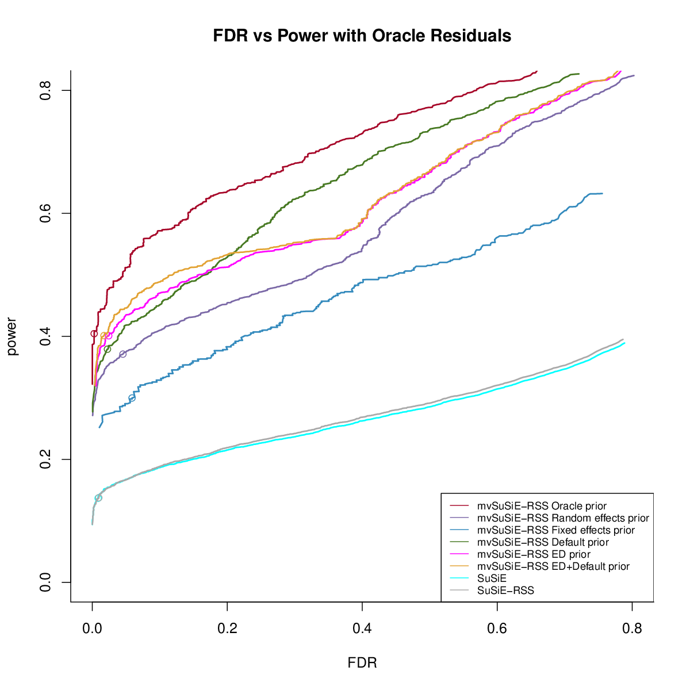
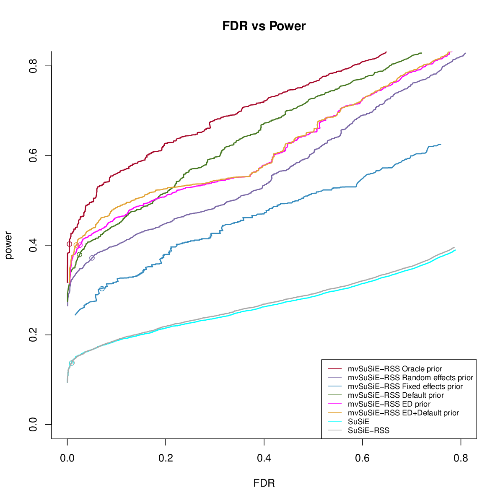
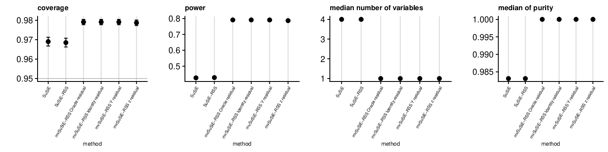
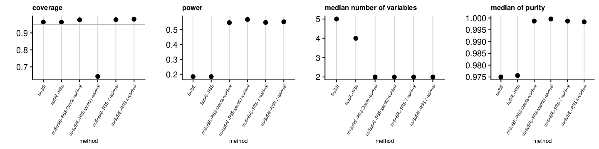
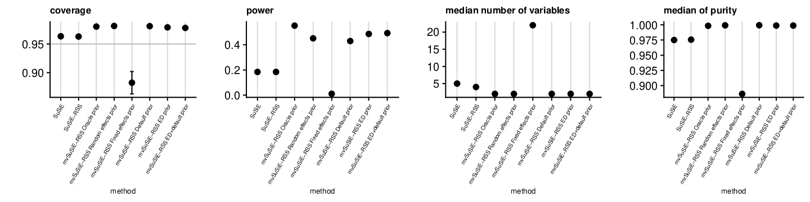

mvSuSiE RSS ukb
Yuxin Zou
03/16/2021
Last updated: 2021-04-05
Checks: 7 0
Knit directory: mmbr-rss-dsc/
This reproducible R Markdown analysis was created with workflowr (version 1.6.2). The Checks tab describes the reproducibility checks that were applied when the results were created. The Past versions tab lists the development history.
Great! Since the R Markdown file has been committed to the Git repository, you know the exact version of the code that produced these results.
Great job! The global environment was empty. Objects defined in the global environment can affect the analysis in your R Markdown file in unknown ways. For reproduciblity it’s best to always run the code in an empty environment.
The command set.seed(20200227) was run prior to running the code in the R Markdown file. Setting a seed ensures that any results that rely on randomness, e.g. subsampling or permutations, are reproducible.
Great job! Recording the operating system, R version, and package versions is critical for reproducibility.
Nice! There were no cached chunks for this analysis, so you can be confident that you successfully produced the results during this run.
Great job! Using relative paths to the files within your workflowr project makes it easier to run your code on other machines.
Great! You are using Git for version control. Tracking code development and connecting the code version to the results is critical for reproducibility.
The results in this page were generated with repository version 5447dc7. See the Past versions tab to see a history of the changes made to the R Markdown and HTML files.
Note that you need to be careful to ensure that all relevant files for the analysis have been committed to Git prior to generating the results (you can use wflow_publish or wflow_git_commit). workflowr only checks the R Markdown file, but you know if there are other scripts or data files that it depends on. Below is the status of the Git repository when the results were generated:
Ignored files:
Ignored: .DS_Store
Ignored: .Rhistory
Ignored: .Rproj.user/
Ignored: data/.DS_Store
Ignored: output/.DS_Store
Untracked files:
Untracked: data/ENSG00000140265.12.Multi_Tissues.rds
Untracked: data/FastQTLSumStats.mash.FL_PC3.rds
Untracked: data/Multi_Tissues.ENSG00000089486.RDS
Untracked: data/mmbr_ukb_simulation/
Untracked: data/mmbr_ukb_simulation_problem/
Untracked: data/ukb_rss_naive_lfsr_problem.rds
Untracked: data/ukb_rss_naive_pip_problem.rds
Untracked: output/GTExprofile_res.rds
Untracked: output/GTExprofile_resL1.rds
Untracked: output/GTExprofile_resL1_elbo.rds
Untracked: output/GTExprofile_resL3.rds
Untracked: output/GTExprofile_resL3_elbo.rds
Untracked: output/GTExprofile_res_elbo.rds
Untracked: output/GTExprofile_resapprox.rds
Untracked: output/GTExprofile_resapproxL1.rds
Untracked: output/GTExprofile_resapproxL1_elbo.rds
Untracked: output/GTExprofile_resapproxL3.rds
Untracked: output/GTExprofile_resapproxL3_elbo.rds
Untracked: output/GTExprofile_resapprox_elbo.rds
Untracked: output/GTExprofile_resapproxdiag.rds
Untracked: output/GTExprofile_resapproxdiagL1.rds
Untracked: output/GTExprofile_resapproxdiagL1_elbo.rds
Untracked: output/GTExprofile_resapproxdiagL3.rds
Untracked: output/GTExprofile_resapproxdiagL3_elbo.rds
Untracked: output/GTExprofile_resapproxdiag_elbo.rds
Untracked: output/GTExprofile_resdiag.rds
Untracked: output/mmbr_gtex_res.Rprof
Untracked: output/mmbr_gtex_res_approx.Rprof
Untracked: output/mmbr_gtex_res_approx_diag.Rprof
Untracked: output/mmbr_gtex_res_diag.Rprof
Untracked: output/mnm_missing_output.20200527.rds
Untracked: output/test
Untracked: output/tiny_data_211_cond2L2.gif
Untracked: output/tiny_data_211_cond2L2.pdf
Untracked: output/tiny_data_211_cond2L3.gif
Untracked: output/tiny_data_211_cond2L3.pdf
Untracked: output/tiny_data_211_cond2initL3.gif
Untracked: output/tiny_data_211_cond2initL3.pdf
Untracked: output/ukb_rss_20200107/
Untracked: output/ukb_rss_20210313/
Unstaged changes:
Modified: analysis/mmbr_missing_rss_problem1.Rmd
Note that any generated files, e.g. HTML, png, CSS, etc., are not included in this status report because it is ok for generated content to have uncommitted changes.
These are the previous versions of the repository in which changes were made to the R Markdown (analysis/mmbr_rss_ukb_simulation_20210313.Rmd) and HTML (docs/mmbr_rss_ukb_simulation_20210313.html) files. If you’ve configured a remote Git repository (see ?wflow_git_remote), click on the hyperlinks in the table below to view the files as they were in that past version.
| File | Version | Author | Date | Message |
|---|---|---|---|---|
| Rmd | 5447dc7 | zouyuxin | 2021-04-05 | wflow_publish(“analysis/mmbr_rss_ukb_simulation_20210313.Rmd”) |
| html | 947ec35 | zouyuxin | 2021-03-16 | Build site. |
| Rmd | 99eed13 | zouyuxin | 2021-03-16 | wflow_publish(“analysis/mmbr_rss_ukb_simulation_20210313.Rmd”) |
| html | 38a8e4e | zouyuxin | 2021-03-16 | Build site. |
| Rmd | a7a9c47 | zouyuxin | 2021-03-16 | wflow_publish(“analysis/mmbr_rss_ukb_simulation_20210313.Rmd”) |
This is result from our mvSuSiE RSS simulation using UKB data. There are 600 datasets. The max PVE across traits is 0.0005.
For each dataset, we simulate signals using 2 type of priors, the details are here
Artificial mixture: 20 conditions. The oracle residual variance is a diagonal matrix.
UKB Bloodcells mixture: 16 conditions. The oracle residual variance is a dense matrix.
We estimate prior weights using ‘EM’ method.
Comparing with previous simulation 20210107, we add a small diagonal to ED priors.
Global comparison
We compare the CS and PIP for each SNP.
PIP calibration
Artificial Mixture
- Different residuals with Oracle prior
- Different priors with Oracle residual

- Different priors with estimated residual from close to null z scores
UKB Bloodcells Mixture
- Different residuals with Oracle prior
- Different priors with Oracle residual

- Different priors with estimated residual from close to null z scores
Power
Artificial Mixture
- Different residuals with Oracle prior
- Different priors with Oracle residual

- Different priors with estimated residual from Y

- Different priors with estimated residual from close to null z scores
UKB Bloodcells Mixture
- Different residuals with Oracle prior
- Different priors with Oracle residual
- Different priors with estimated residual from Y

- Different priors with estimated residual from close to null z scores
CS
Artificial Mixture
library(dplyr)
Attaching package: 'dplyr'The following objects are masked from 'package:stats':
filter, lagThe following objects are masked from 'package:base':
intersect, setdiff, setequal, unionlibrary(kableExtra)
Attaching package: 'kableExtra'The following object is masked from 'package:dplyr':
group_rowstb = readRDS('output/ukb_rss_20210313/ukb_rss_20210313_cs/ukb_rss_cs_simuartificial_mixture_ukb_glob.rds')
tb$method = rownames(tb)
rename = list('susie_suff+FALSE' = 'SuSiE',
'susie_rss+FALSE' = 'SuSiE-RSS',
'mnm_suff_oracle+oracle' = 'mvSuSiE Oracle prior Oracle residual',
'mnm_suff_oracle+covY' = 'mvSuSiE Oracle prior Y residual',
'mnm_suff_identity+oracle' = 'mvSuSiE Random effects prior Oracle residual',
'mnm_suff_identity+covY' = 'mvSuSiE Random effects prior Y residual',
'mnm_suff_naive+oracle' = 'mvSuSiE Default prior Oracle residual',
'mnm_suff_naive+covY' = 'mvSuSiE Default prior Y residual',
'mnm_suff_ed+oracle' = 'mvSuSiE ED prior Oracle residual',
'mnm_suff_ed+covY' = 'mvSuSiE ED prior Y residual',
'mnm_suff_ed_ddcan+oracle' = 'mvSuSiE ED+default prior Oracle residual',
'mnm_suff_ed_ddcan+covY' = 'mvSuSiE ED+default prior Y residual',
'mnm_rss_oracle+oracle' = 'mvSuSiE-RSS Oracle prior Oracle residual',
'mnm_rss_oracle+identity' = 'mvSuSiE-RSS Oracle prior Identity residual',
'mnm_rss_oracle+nullz' = 'mvSuSiE-RSS Oracle prior z residual',
'mnm_rss_oracle+corY' = 'mvSuSiE-RSS Oracle prior Y residual',
'mnm_rss_identity+oracle' = 'mvSuSiE-RSS Random effects prior Oracle residual',
'mnm_rss_shared+oracle' = 'mvSuSiE-RSS Fixed effects prior Oracle residual',
'mnm_rss_naive+oracle' = 'mvSuSiE-RSS Default prior Oracle residual',
'mnm_rss_ed+oracle' = 'mvSuSiE-RSS ED prior Oracle residual',
'mnm_rss_ed_ddcan+oracle' = 'mvSuSiE-RSS ED+default prior Oracle residual',
'mnm_rss_identity_corY+corY' = 'mvSuSiE-RSS Random effects prior Y residual',
'mnm_rss_shared_corY+corY' = 'mvSuSiE-RSS Fixed effects prior Y residual',
'mnm_rss_naive_corY+corY' = 'mvSuSiE-RSS Default prior Y residual',
'mnm_rss_ed_corY+corY' = 'mvSuSiE-RSS ED prior Y residual',
'mnm_rss_ed_ddcan_corY+corY' = 'mvSuSiE-RSS ED+default prior Y residual',
'mnm_rss_identity_corZ+nullz' = 'mvSuSiE-RSS Random effects prior z residual',
'mnm_rss_shared_corZ+nullz' = 'mvSuSiE-RSS Fixed effects prior z residual',
'mnm_rss_naive_corZ+nullz' = 'mvSuSiE-RSS Default prior z residual',
'mnm_rss_ed_corZ+nullz' = 'mvSuSiE-RSS ED prior z residual',
'mnm_rss_ed_ddcan_corZ+nullz' = 'mvSuSiE-RSS ED+default prior z residual')- Different residuals with Oracle prior
methods_resid = c('mnm_suff_oracle+oracle','mnm_rss_oracle+oracle',
'mnm_rss_oracle+identity','mnm_rss_oracle+nullz','mnm_rss_oracle+corY')
rates_resid = tb %>% filter(method %in% methods_resid)
rates_resid$method = sapply(rates_resid$method, function(x) rename[[x]])
rates_resid$method = gsub(' Oracle prior', '', rates_resid$method)
rates_resid = rates_resid[match(c('mvSuSiE Oracle residual','mvSuSiE-RSS Oracle residual','mvSuSiE-RSS Identity residual',
'mvSuSiE-RSS Y residual','mvSuSiE-RSS z residual'), rates_resid$method),]
rates_resid[,c('size', 'purity', 'overlap', 'power', 'fdr', 'coverage')] %>% kbl() %>% kable_styling()| size | purity | overlap | power | fdr | coverage | |
|---|---|---|---|---|---|---|
| mnm_suff_oracle+oracle | 2 | 0.9993099 | 0 | 0.7217940 | 0.0246212 | 0.9753788 |
| mnm_rss_oracle+oracle | 2 | 0.9993099 | 0 | 0.7217940 | 0.0246212 | 0.9753788 |
| mnm_rss_oracle+identity | 2 | 0.9993172 | 0 | 0.7224947 | 0.0245979 | 0.9754021 |
| mnm_rss_oracle+corY | 2 | 0.9993008 | 0 | 0.7203924 | 0.0246679 | 0.9753321 |
| mnm_rss_oracle+nullz | 2 | 0.9992816 | 0 | 0.7189909 | 0.0265655 | 0.9734345 |
- Different priors with Oracle residual
methods_prior_oracleresid = c('mnm_rss_oracle+oracle', 'mnm_rss_identity+oracle', 'mnm_rss_shared+oracle',
'mnm_rss_naive+oracle', 'mnm_rss_ed+oracle','mnm_rss_ed_ddcan+oracle')
rates_priors_oracleresid = tb %>% filter(method %in% methods_prior_oracleresid)
rates_priors_oracleresid$method = sapply(rates_priors_oracleresid$method, function(x) rename[[x]])
rates_priors_oracleresid$method = gsub(' Oracle residual', '', rates_priors_oracleresid$method)
rates_priors_oracleresid = rates_priors_oracleresid[match(c('mvSuSiE-RSS Oracle prior','mvSuSiE-RSS Fixed effects prior',
'mvSuSiE-RSS Random effects prior','mvSuSiE-RSS Default prior',
'mvSuSiE-RSS ED prior','mvSuSiE-RSS ED+default prior'),
rates_priors_oracleresid$method),]
rates_priors_oracleresid[,c('size', 'purity', 'overlap', 'power', 'fdr', 'coverage')] %>% kbl() %>% kable_styling()| size | purity | overlap | power | fdr | coverage | |
|---|---|---|---|---|---|---|
| mnm_rss_oracle+oracle | 2 | 0.9993099 | 0 | 0.7217940 | 0.0246212 | 0.9753788 |
| mnm_rss_shared+oracle | 2 | 0.9976247 | 0 | 0.3615978 | 0.0318949 | 0.9681051 |
| mnm_rss_identity+oracle | 2 | 0.9990295 | 0 | 0.6944639 | 0.0284314 | 0.9715686 |
| mnm_rss_naive+oracle | 2 | 0.9989653 | 35 | 0.7231955 | 0.0227273 | 0.9772727 |
| mnm_rss_ed+oracle | 2 | 0.9991060 | 0 | 0.7168886 | 0.0266413 | 0.9733587 |
| mnm_rss_ed_ddcan+oracle | 2 | 0.9992153 | 4 | 0.7189909 | 0.0247148 | 0.9752852 |
- Different priors with estimated residual from Y
methods_prior_y = c('mnm_rss_oracle+corY', 'mnm_rss_identity_corY+corY',
'mnm_rss_shared_corY+corY', 'mnm_rss_naive_corY+corY',
"mnm_rss_ed_corY+corY","mnm_rss_ed_ddcan_corY+corY")
rates_priors_yresid = tb %>% filter(method %in% methods_prior_y)
rates_priors_yresid$method = sapply(rates_priors_yresid$method, function(x) rename[[x]])
rates_priors_yresid$method = gsub(' Y residual', '', rates_priors_yresid$method)
rates_priors_yresid = rates_priors_yresid[match(c('mvSuSiE-RSS Oracle prior','mvSuSiE-RSS Fixed effects prior',
'mvSuSiE-RSS Random effects prior','mvSuSiE-RSS Default prior',
'mvSuSiE-RSS ED prior','mvSuSiE-RSS ED+default prior'),
rates_priors_yresid$method),]
rates_priors_yresid[,c('size', 'purity', 'overlap', 'power', 'fdr', 'coverage')] %>% kbl() %>% kable_styling()| size | purity | overlap | power | fdr | coverage | |
|---|---|---|---|---|---|---|
| mnm_rss_oracle+corY | 2 | 0.9993008 | 0 | 0.7203924 | 0.0246679 | 0.9753321 |
| mnm_rss_shared_corY+corY | 2 | 0.9975845 | 0 | 0.3622985 | 0.0318352 | 0.9681648 |
| mnm_rss_identity_corY+corY | 2 | 0.9990577 | 0 | 0.6937631 | 0.0294118 | 0.9705882 |
| mnm_rss_naive_corY+corY | 2 | 0.9989653 | 35 | 0.7210932 | 0.0237192 | 0.9762808 |
| mnm_rss_ed_corY+corY | 2 | 0.9991516 | 0 | 0.7168886 | 0.0266413 | 0.9733587 |
| mnm_rss_ed_ddcan_corY+corY | 2 | 0.9992418 | 4 | 0.7189909 | 0.0247148 | 0.9752852 |
- Different priors with estimated residual from close to null z scores

methods_prior = c('mnm_rss_oracle+nullz', 'mnm_rss_identity_corZ+nullz',
'mnm_rss_shared_corZ+nullz', 'mnm_rss_naive_corZ+nullz',
'mnm_rss_ed_corZ+nullz', 'mnm_rss_ed_ddcan_corZ+nullz')
rates_priors = tb %>% filter(method %in% methods_prior)
rates_priors$method = sapply(rates_priors$method, function(x) rename[[x]])
rates_priors$method = gsub(' Y residual', '', rates_priors$method)
rates_priors$method = gsub(' z residual', '', rates_priors$method)
rates_priors = rates_priors[match(c('mvSuSiE-RSS Oracle prior', 'mvSuSiE-RSS Random effects prior',
'mvSuSiE-RSS Fixed effects prior','mvSuSiE-RSS Default prior',
'mvSuSiE-RSS ED prior','mvSuSiE-RSS ED+default prior'), rates_priors$method),]
rates_priors[,c('size', 'purity', 'overlap', 'power', 'fdr', 'coverage')] %>% kbl() %>% kable_styling()| size | purity | overlap | power | fdr | coverage | |
|---|---|---|---|---|---|---|
| mnm_rss_oracle+nullz | 2 | 0.9992816 | 0 | 0.7189909 | 0.0265655 | 0.9734345 |
| mnm_rss_identity_corZ+nullz | 2 | 0.9991516 | 0 | 0.6951647 | 0.0340798 | 0.9659202 |
| mnm_rss_shared_corZ+nullz | 2 | 0.9973099 | 0 | 0.3665032 | 0.0332717 | 0.9667283 |
| mnm_rss_naive_corZ+nullz | 2 | 0.9990295 | 36 | 0.7231955 | 0.0264151 | 0.9735849 |
| mnm_rss_ed_corZ+nullz | 2 | 0.9991543 | 1 | 0.7119832 | 0.0296084 | 0.9703916 |
| mnm_rss_ed_ddcan_corZ+nullz | 2 | 0.9992644 | 6 | 0.7175893 | 0.0275404 | 0.9724596 |
UKB Bloodcells Mixture
tb = readRDS('output/ukb_rss_20210313/ukb_rss_20210313_cs/ukb_rss_cs_simuukb_bloodcells_mixture_glob.rds')
tb$method = rownames(tb)- Different residuals with Oracle prior

methods_resid = c('mnm_suff_oracle+oracle','mnm_rss_oracle+oracle',
'mnm_rss_oracle+identity','mnm_rss_oracle+nullz','mnm_rss_oracle+corY')
rates_resid = tb %>% filter(method %in% methods_resid)
rates_resid$method = sapply(rates_resid$method, function(x) rename[[x]])
rates_resid$method = gsub(' Oracle prior', '', rates_resid$method)
rates_resid = rates_resid[match(c('mvSuSiE Oracle residual','mvSuSiE-RSS Oracle residual','mvSuSiE-RSS Identity residual',
'mvSuSiE-RSS Y residual','mvSuSiE-RSS z residual'), rates_resid$method),]
rates_resid[,c('size', 'purity', 'overlap', 'power', 'fdr', 'coverage')] %>% kbl() %>% kable_styling()| size | purity | overlap | power | fdr | coverage | |
|---|---|---|---|---|---|---|
| mnm_suff_oracle+oracle | 2 | 0.9981412 | 0 | 0.8156973 | 0.0243085 | 0.9756915 |
| mnm_rss_oracle+oracle | 2 | 0.9981412 | 0 | 0.8156973 | 0.0243085 | 0.9756915 |
| mnm_rss_oracle+identity | 2 | 0.9993815 | 0 | 0.7995795 | 0.4574417 | 0.5425583 |
| mnm_rss_oracle+corY | 2 | 0.9981411 | 0 | 0.8170988 | 0.0234506 | 0.9765494 |
| mnm_rss_oracle+nullz | 2 | 0.9979292 | 0 | 0.8156973 | 0.0218487 | 0.9781513 |
- Different priors with Oracle residual
methods_prior_oracleresid = c('mnm_rss_oracle+oracle', 'mnm_rss_identity+oracle', 'mnm_rss_shared+oracle',
'mnm_rss_naive+oracle', 'mnm_rss_ed+oracle','mnm_rss_ed_ddcan+oracle')
rates_priors_oracleresid = tb %>% filter(method %in% methods_prior_oracleresid)
rates_priors_oracleresid$method = sapply(rates_priors_oracleresid$method, function(x) rename[[x]])
rates_priors_oracleresid$method = gsub(' Oracle residual', '', rates_priors_oracleresid$method)
rates_priors_oracleresid = rates_priors_oracleresid[match(c('mvSuSiE-RSS Oracle prior','mvSuSiE-RSS Fixed effects prior',
'mvSuSiE-RSS Random effects prior','mvSuSiE-RSS Default prior',
'mvSuSiE-RSS ED prior','mvSuSiE-RSS ED+default prior'),
rates_priors_oracleresid$method),]
rates_priors_oracleresid[,c('size', 'purity', 'overlap', 'power', 'fdr', 'coverage')] %>% kbl() %>% kable_styling()| size | purity | overlap | power | fdr | coverage | |
|---|---|---|---|---|---|---|
| mnm_rss_oracle+oracle | 2 | 0.9981412 | 0 | 0.8156973 | 0.0243085 | 0.9756915 |
| mnm_rss_shared+oracle | 16 | 0.9075882 | 0 | 0.0014015 | 0.3333333 | 0.6666667 |
| mnm_rss_identity+oracle | 2 | 0.9987416 | 0 | 0.7575333 | 0.0278777 | 0.9721223 |
| mnm_rss_naive+oracle | 2 | 0.9988085 | 3 | 0.7217940 | 0.0236967 | 0.9763033 |
| mnm_rss_ed+oracle | 2 | 0.9981934 | 0 | 0.8065872 | 0.0295110 | 0.9704890 |
| mnm_rss_ed_ddcan+oracle | 2 | 0.9982829 | 0 | 0.8058865 | 0.0287162 | 0.9712838 |
- Different priors with estimated residual from Y
methods_prior_y = c('mnm_rss_oracle+corY', 'mnm_rss_identity_corY+corY',
'mnm_rss_shared_corY+corY', 'mnm_rss_naive_corY+corY',
"mnm_rss_ed_corY+corY","mnm_rss_ed_ddcan_corY+corY")
rates_priors_yresid = tb %>% filter(method %in% methods_prior_y)
rates_priors_yresid$method = sapply(rates_priors_yresid$method, function(x) rename[[x]])
rates_priors_yresid$method = gsub(' Y residual', '', rates_priors_yresid$method)
rates_priors_yresid = rates_priors_yresid[match(c('mvSuSiE-RSS Oracle prior','mvSuSiE-RSS Fixed effects prior',
'mvSuSiE-RSS Random effects prior','mvSuSiE-RSS Default prior',
'mvSuSiE-RSS ED prior','mvSuSiE-RSS ED+default prior'),
rates_priors_yresid$method),]
rates_priors_yresid[,c('size', 'purity', 'overlap', 'power', 'fdr', 'coverage')] %>% kbl() %>% kable_styling()| size | purity | overlap | power | fdr | coverage | |
|---|---|---|---|---|---|---|
| mnm_rss_oracle+corY | 2 | 0.9981411 | 0 | 0.8170988 | 0.0234506 | 0.9765494 |
| mnm_rss_shared_corY+corY | 16 | 0.9075882 | 0 | 0.0014015 | 0.3333333 | 0.6666667 |
| mnm_rss_identity_corY+corY | 2 | 0.9987411 | 0 | 0.7582341 | 0.0261026 | 0.9738974 |
| mnm_rss_naive_corY+corY | 2 | 0.9988085 | 3 | 0.7224947 | 0.0227488 | 0.9772512 |
| mnm_rss_ed_corY+corY | 2 | 0.9981410 | 0 | 0.8072880 | 0.0294861 | 0.9705139 |
| mnm_rss_ed_ddcan_corY+corY | 2 | 0.9982829 | 0 | 0.8051857 | 0.0295608 | 0.9704392 |
- Different priors with estimated residual from close to null z scores
methods_prior = c('mnm_rss_oracle+nullz', 'mnm_rss_identity_corZ+nullz',
'mnm_rss_shared_corZ+nullz', 'mnm_rss_naive_corZ+nullz',
'mnm_rss_ed_corZ+nullz', 'mnm_rss_ed_ddcan_corZ+nullz')
rates_priors = tb %>% filter(method %in% methods_prior)
rates_priors$method = sapply(rates_priors$method, function(x) rename[[x]])
rates_priors$method = gsub(' Y residual', '', rates_priors$method)
rates_priors$method = gsub(' z residual', '', rates_priors$method)
rates_priors = rates_priors[match(c('mvSuSiE-RSS Oracle prior', 'mvSuSiE-RSS Random effects prior',
'mvSuSiE-RSS Fixed effects prior','mvSuSiE-RSS Default prior',
'mvSuSiE-RSS ED prior','mvSuSiE-RSS ED+default prior'), rates_priors$method),]
rates_priors[,c('size', 'purity', 'overlap', 'power', 'fdr', 'coverage')] %>% kbl() %>% kable_styling()| size | purity | overlap | power | fdr | coverage | |
|---|---|---|---|---|---|---|
| mnm_rss_oracle+nullz | 2 | 0.9979292 | 0 | 0.8156973 | 0.0218487 | 0.9781513 |
| mnm_rss_identity_corZ+nullz | 2 | 0.9984231 | 0 | 0.7505256 | 0.0192308 | 0.9807692 |
| mnm_rss_shared_corZ+nullz | 22 | 0.8862773 | 0 | 0.0105116 | 0.1176471 | 0.8823529 |
| mnm_rss_naive_corZ+nullz | 2 | 0.9985588 | 2 | 0.7133847 | 0.0202117 | 0.9797883 |
| mnm_rss_ed_corZ+nullz | 2 | 0.9977725 | 0 | 0.8107919 | 0.0236287 | 0.9763713 |
| mnm_rss_ed_ddcan_corZ+nullz | 2 | 0.9979426 | 0 | 0.8079888 | 0.0237087 | 0.9762913 |
Trait specific comparison
We compare the CS and PIP for each SNP in each trait.
PIP calibration
Artificial Mixture
- Different residuals with Oracle prior
- Different priors with Oracle residual
- Different priors with estimated residual from close to null z scores
UKB Bloodcells Mixture
- Different residuals with Oracle prior
- Different priors with Oracle residual
- Different priors with estimated residual from close to null z scores
Power
Artificial Mixture
- Different residuals with Oracle prior

- Different priors with Oracle residual

- Different priors with estimated residual from close to null z scores

UKB Bloodcells Mixture
- Different residuals with Oracle prior
- Different priors with Oracle residual
- Different priors with estimated residual from close to null z scores
CS
Artificial Mixture
tb = readRDS('output/ukb_rss_20210313/ukb_rss_20210313_cs/ukb_rss_cs_simuartificial_mixture_ukb_cond.rds')
tb$method = rownames(tb)- Different residuals with Oracle prior

methods_resid = c('susie_suff+FALSE','susie_rss+FALSE','mnm_suff_oracle+oracle','mnm_rss_oracle+oracle',
'mnm_rss_oracle+identity','mnm_rss_oracle+nullz','mnm_rss_oracle+corY')
rates_resid = tb %>% filter(method %in% methods_resid)
rates_resid$method = sapply(rates_resid$method, function(x) rename[[x]])
rates_resid$method = gsub(' Oracle prior', '', rates_resid$method)
rates_resid = rates_resid[match(c('SuSiE', 'SuSiE-RSS',
'mvSuSiE Oracle residual','mvSuSiE-RSS Oracle residual','mvSuSiE-RSS Identity residual',
'mvSuSiE-RSS Y residual','mvSuSiE-RSS z residual'), rates_resid$method),]
rates_resid[,c('size', 'purity', 'power', 'fdr', 'coverage')] %>% kbl() %>% kable_styling()| size | purity | power | fdr | coverage | |
|---|---|---|---|---|---|
| susie_suff+FALSE | 4 | 0.9830877 | 0.4261258 | 0.0309749 | 0.9690251 |
| susie_rss+FALSE | 4 | 0.9830877 | 0.4279866 | 0.0314974 | 0.9685026 |
| mnm_suff_oracle+oracle | 1 | 1.0000000 | 0.7914403 | 0.0209024 | 0.9790976 |
| mnm_rss_oracle+oracle | 1 | 1.0000000 | 0.7914403 | 0.0209024 | 0.9790976 |
| mnm_rss_oracle+identity | 1 | 1.0000000 | 0.7914403 | 0.0209024 | 0.9790976 |
| mnm_rss_oracle+corY | 1 | 1.0000000 | 0.7912170 | 0.0209082 | 0.9790918 |
| mnm_rss_oracle+nullz | 1 | 1.0000000 | 0.7868999 | 0.0212924 | 0.9787076 |
- Different priors with Oracle residual
methods_prior_oracleresid = c('susie_suff+FALSE','susie_rss+FALSE',
'mnm_rss_oracle+oracle', 'mnm_rss_identity+oracle', 'mnm_rss_shared+oracle',
'mnm_rss_naive+oracle', 'mnm_rss_ed+oracle','mnm_rss_ed_ddcan+oracle')
rates_priors_oracleresid = tb %>% filter(method %in% methods_prior_oracleresid)
rates_priors_oracleresid$method = sapply(rates_priors_oracleresid$method, function(x) rename[[x]])
rates_priors_oracleresid$method = gsub(' Oracle residual', '', rates_priors_oracleresid$method)
rates_priors_oracleresid = rates_priors_oracleresid[match(c('SuSiE', 'SuSiE-RSS',
'mvSuSiE-RSS Oracle prior','mvSuSiE-RSS Fixed effects prior',
'mvSuSiE-RSS Random effects prior','mvSuSiE-RSS Default prior',
'mvSuSiE-RSS ED prior','mvSuSiE-RSS ED+default prior'),
rates_priors_oracleresid$method),]
rates_priors_oracleresid[,c('size', 'purity', 'power', 'fdr', 'coverage')] %>% kbl() %>% kable_styling()| size | purity | power | fdr | coverage | |
|---|---|---|---|---|---|
| susie_suff+FALSE | 4 | 0.9830877 | 0.4261258 | 0.0309749 | 0.9690251 |
| susie_rss+FALSE | 4 | 0.9830877 | 0.4279866 | 0.0314974 | 0.9685026 |
| mnm_rss_oracle+oracle | 1 | 1.0000000 | 0.7914403 | 0.0209024 | 0.9790976 |
| mnm_rss_shared+oracle | 2 | 0.9976247 | 0.6875326 | 0.1334897 | 0.8665103 |
| mnm_rss_identity+oracle | 1 | 1.0000000 | 0.7234090 | 0.0747334 | 0.9252666 |
| mnm_rss_naive+oracle | 1 | 1.0000000 | 0.7426126 | 0.0377122 | 0.9622878 |
| mnm_rss_ed+oracle | 2 | 1.0000000 | 0.7847413 | 0.0496665 | 0.9503335 |
| mnm_rss_ed_ddcan+oracle | 1 | 1.0000000 | 0.7845925 | 0.0355901 | 0.9644099 |
- Different priors with estimated residual from Y
methods_prior_y = c('susie_suff+FALSE','susie_rss+FALSE',
'mnm_rss_oracle+corY', 'mnm_rss_identity_corY+corY',
'mnm_rss_shared_corY+corY', 'mnm_rss_naive_corY+corY',
"mnm_rss_ed_corY+corY","mnm_rss_ed_ddcan_corY+corY")
rates_priors_yresid = tb %>% filter(method %in% methods_prior_y)
rates_priors_yresid$method = sapply(rates_priors_yresid$method, function(x) rename[[x]])
rates_priors_yresid$method = gsub(' Y residual', '', rates_priors_yresid$method)
rates_priors_yresid = rates_priors_yresid[match(c('SuSiE', 'SuSiE-RSS','mvSuSiE-RSS Oracle prior','mvSuSiE-RSS Fixed effects prior',
'mvSuSiE-RSS Random effects prior','mvSuSiE-RSS Default prior',
'mvSuSiE-RSS ED prior','mvSuSiE-RSS ED+default prior'),
rates_priors_yresid$method),]
rates_priors_yresid[,c('size', 'purity', 'power', 'fdr', 'coverage')] %>% kbl() %>% kable_styling()| size | purity | power | fdr | coverage | |
|---|---|---|---|---|---|
| susie_suff+FALSE | 4 | 0.9830877 | 0.4261258 | 0.0309749 | 0.9690251 |
| susie_rss+FALSE | 4 | 0.9830877 | 0.4279866 | 0.0314974 | 0.9685026 |
| mnm_rss_oracle+corY | 1 | 1.0000000 | 0.7912170 | 0.0209082 | 0.9790918 |
| mnm_rss_shared_corY+corY | 2 | 0.9975845 | 0.6876814 | 0.1349251 | 0.8650749 |
| mnm_rss_identity_corY+corY | 1 | 1.0000000 | 0.7236323 | 0.0749762 | 0.9250238 |
| mnm_rss_naive_corY+corY | 1 | 1.0000000 | 0.7426126 | 0.0378050 | 0.9621950 |
| mnm_rss_ed_corY+corY | 1 | 1.0000000 | 0.7858578 | 0.0484859 | 0.9515141 |
| mnm_rss_ed_ddcan_corY+corY | 1 | 1.0000000 | 0.7846669 | 0.0355869 | 0.9644131 |
- Different priors with estimated residual from close to null z scores
methods_prior = c('susie_suff+FALSE','susie_rss+FALSE',
'mnm_rss_oracle+nullz', 'mnm_rss_identity_corZ+nullz',
'mnm_rss_shared_corZ+nullz', 'mnm_rss_naive_corZ+nullz',
'mnm_rss_ed_corZ+nullz', 'mnm_rss_ed_ddcan_corZ+nullz')
rates_priors = tb %>% filter(method %in% methods_prior)
rates_priors$method = sapply(rates_priors$method, function(x) rename[[x]])
rates_priors$method = gsub(' Y residual', '', rates_priors$method)
rates_priors$method = gsub(' z residual', '', rates_priors$method)
rates_priors = rates_priors[match(c('SuSiE', 'SuSiE-RSS','mvSuSiE-RSS Oracle prior', 'mvSuSiE-RSS Random effects prior',
'mvSuSiE-RSS Fixed effects prior','mvSuSiE-RSS Default prior',
'mvSuSiE-RSS ED prior','mvSuSiE-RSS ED+default prior'), rates_priors$method),]
rates_priors[,c('size', 'purity', 'power', 'fdr', 'coverage')] %>% kbl() %>% kable_styling()| size | purity | power | fdr | coverage | |
|---|---|---|---|---|---|
| susie_suff+FALSE | 4 | 0.9830877 | 0.4261258 | 0.0309749 | 0.9690251 |
| susie_rss+FALSE | 4 | 0.9830877 | 0.4279866 | 0.0314974 | 0.9685026 |
| mnm_rss_oracle+nullz | 1 | 1.0000000 | 0.7868999 | 0.0212924 | 0.9787076 |
| mnm_rss_identity_corZ+nullz | 1 | 1.0000000 | 0.7217715 | 0.0792822 | 0.9207178 |
| mnm_rss_shared_corZ+nullz | 2 | 0.9973099 | 0.6817268 | 0.1535120 | 0.8464880 |
| mnm_rss_naive_corZ+nullz | 1 | 1.0000000 | 0.7379978 | 0.0422141 | 0.9577859 |
| mnm_rss_ed_corZ+nullz | 1 | 1.0000000 | 0.7816152 | 0.0501990 | 0.9498010 |
| mnm_rss_ed_ddcan_corZ+nullz | 1 | 1.0000000 | 0.7799032 | 0.0370370 | 0.9629630 |
UKB Bloodcells Mixture
tb = readRDS('output/ukb_rss_20210313/ukb_rss_20210313_cs/ukb_rss_cs_simuukb_bloodcells_mixture_cond.rds')
tb$method = rownames(tb)- Different residuals with Oracle prior

methods_resid = c('susie_suff+FALSE','susie_rss+FALSE','mnm_suff_oracle+oracle','mnm_rss_oracle+oracle',
'mnm_rss_oracle+identity','mnm_rss_oracle+nullz','mnm_rss_oracle+corY')
rates_resid = tb %>% filter(method %in% methods_resid)
rates_resid$method = sapply(rates_resid$method, function(x) rename[[x]])
rates_resid$method = gsub(' Oracle prior', '', rates_resid$method)
rates_resid = rates_resid[match(c('SuSiE', 'SuSiE-RSS',
'mvSuSiE Oracle residual','mvSuSiE-RSS Oracle residual','mvSuSiE-RSS Identity residual',
'mvSuSiE-RSS Y residual','mvSuSiE-RSS z residual'), rates_resid$method),]
rates_resid[,c('size', 'purity', 'power', 'fdr', 'coverage')] %>% kbl() %>% kable_styling()| size | purity | power | fdr | coverage | |
|---|---|---|---|---|---|
| susie_suff+FALSE | 5 | 0.9750062 | 0.1843465 | 0.0364011 | 0.9635989 |
| susie_rss+FALSE | 4 | 0.9756163 | 0.1843903 | 0.0368337 | 0.9631663 |
| mnm_suff_oracle+oracle | 2 | 0.9986987 | 0.5465137 | 0.0230956 | 0.9769044 |
| mnm_rss_oracle+oracle | 2 | 0.9986987 | 0.5465137 | 0.0230956 | 0.9769044 |
| mnm_rss_oracle+identity | 2 | 0.9995977 | 0.5678434 | 0.3566715 | 0.6433285 |
| mnm_rss_oracle+corY | 2 | 0.9986987 | 0.5477400 | 0.0221284 | 0.9778716 |
| mnm_rss_oracle+nullz | 2 | 0.9983670 | 0.5521198 | 0.0194462 | 0.9805538 |
- Different priors with Oracle residual
methods_prior_oracleresid = c('susie_suff+FALSE','susie_rss+FALSE',
'mnm_rss_oracle+oracle', 'mnm_rss_identity+oracle', 'mnm_rss_shared+oracle',
'mnm_rss_naive+oracle', 'mnm_rss_ed+oracle','mnm_rss_ed_ddcan+oracle')
rates_priors_oracleresid = tb %>% filter(method %in% methods_prior_oracleresid)
rates_priors_oracleresid$method = sapply(rates_priors_oracleresid$method, function(x) rename[[x]])
rates_priors_oracleresid$method = gsub(' Oracle residual', '', rates_priors_oracleresid$method)
rates_priors_oracleresid = rates_priors_oracleresid[match(c('SuSiE', 'SuSiE-RSS',
'mvSuSiE-RSS Oracle prior','mvSuSiE-RSS Fixed effects prior',
'mvSuSiE-RSS Random effects prior','mvSuSiE-RSS Default prior',
'mvSuSiE-RSS ED prior','mvSuSiE-RSS ED+default prior'),
rates_priors_oracleresid$method),]
rates_priors_oracleresid[,c('size', 'purity', 'power', 'fdr', 'coverage')] %>% kbl() %>% kable_styling()| size | purity | power | fdr | coverage | |
|---|---|---|---|---|---|
| susie_suff+FALSE | 5 | 0.9750062 | 0.1843465 | 0.0364011 | 0.9635989 |
| susie_rss+FALSE | 4 | 0.9756163 | 0.1843903 | 0.0368337 | 0.9631663 |
| mnm_rss_oracle+oracle | 2 | 0.9986987 | 0.5465137 | 0.0230956 | 0.9769044 |
| mnm_rss_shared+oracle | 16 | 0.9075882 | 0.0014015 | 0.3333333 | 0.6666667 |
| mnm_rss_identity+oracle | 2 | 0.9993694 | 0.4535301 | 0.0206186 | 0.9793814 |
| mnm_rss_naive+oracle | 2 | 0.9995829 | 0.4331202 | 0.0196292 | 0.9803708 |
| mnm_rss_ed+oracle | 2 | 0.9991060 | 0.4830501 | 0.0254484 | 0.9745516 |
| mnm_rss_ed_ddcan+oracle | 2 | 0.9991060 | 0.4904958 | 0.0254960 | 0.9745040 |
- Different priors with estimated residual from Y
methods_prior_y = c('susie_suff+FALSE','susie_rss+FALSE',
'mnm_rss_oracle+corY', 'mnm_rss_identity_corY+corY',
'mnm_rss_shared_corY+corY', 'mnm_rss_naive_corY+corY',
"mnm_rss_ed_corY+corY","mnm_rss_ed_ddcan_corY+corY")
rates_priors_yresid = tb %>% filter(method %in% methods_prior_y)
rates_priors_yresid$method = sapply(rates_priors_yresid$method, function(x) rename[[x]])
rates_priors_yresid$method = gsub(' Y residual', '', rates_priors_yresid$method)
rates_priors_yresid = rates_priors_yresid[match(c('SuSiE', 'SuSiE-RSS','mvSuSiE-RSS Oracle prior','mvSuSiE-RSS Fixed effects prior',
'mvSuSiE-RSS Random effects prior','mvSuSiE-RSS Default prior',
'mvSuSiE-RSS ED prior','mvSuSiE-RSS ED+default prior'),
rates_priors_yresid$method),]
rates_priors_yresid[,c('size', 'purity', 'power', 'fdr', 'coverage')] %>% kbl() %>% kable_styling()| size | purity | power | fdr | coverage | |
|---|---|---|---|---|---|
| susie_suff+FALSE | 5 | 0.9750062 | 0.1843465 | 0.0364011 | 0.9635989 |
| susie_rss+FALSE | 4 | 0.9756163 | 0.1843903 | 0.0368337 | 0.9631663 |
| mnm_rss_oracle+corY | 2 | 0.9986987 | 0.5477400 | 0.0221284 | 0.9778716 |
| mnm_rss_shared_corY+corY | 16 | 0.9075882 | 0.0014015 | 0.3333333 | 0.6666667 |
| mnm_rss_identity_corY+corY | 2 | 0.9993655 | 0.4539681 | 0.0195800 | 0.9804200 |
| mnm_rss_naive_corY+corY | 2 | 0.9995751 | 0.4331202 | 0.0187537 | 0.9812463 |
| mnm_rss_ed_corY+corY | 2 | 0.9990928 | 0.4836195 | 0.0250750 | 0.9749250 |
| mnm_rss_ed_ddcan_corY+corY | 2 | 0.9991060 | 0.4898826 | 0.0256969 | 0.9743031 |
- Different priors with estimated residual from close to null z scores

methods_prior = c('susie_suff+FALSE','susie_rss+FALSE',
'mnm_rss_oracle+nullz', 'mnm_rss_identity_corZ+nullz',
'mnm_rss_shared_corZ+nullz', 'mnm_rss_naive_corZ+nullz',
'mnm_rss_ed_corZ+nullz', 'mnm_rss_ed_ddcan_corZ+nullz')
rates_priors = tb %>% filter(method %in% methods_prior)
rates_priors$method = sapply(rates_priors$method, function(x) rename[[x]])
rates_priors$method = gsub(' Y residual', '', rates_priors$method)
rates_priors$method = gsub(' z residual', '', rates_priors$method)
rates_priors = rates_priors[match(c('SuSiE', 'SuSiE-RSS','mvSuSiE-RSS Oracle prior', 'mvSuSiE-RSS Random effects prior',
'mvSuSiE-RSS Fixed effects prior','mvSuSiE-RSS Default prior',
'mvSuSiE-RSS ED prior','mvSuSiE-RSS ED+default prior'), rates_priors$method),]
rates_priors[,c('size', 'purity', 'power', 'fdr', 'coverage')] %>% kbl() %>% kable_styling()| size | purity | power | fdr | coverage | |
|---|---|---|---|---|---|
| susie_suff+FALSE | 5 | 0.9750062 | 0.1843465 | 0.0364011 | 0.9635989 |
| susie_rss+FALSE | 4 | 0.9756163 | 0.1843903 | 0.0368337 | 0.9631663 |
| mnm_rss_oracle+nullz | 2 | 0.9983670 | 0.5521198 | 0.0194462 | 0.9805538 |
| mnm_rss_identity_corZ+nullz | 2 | 0.9991964 | 0.4513840 | 0.0183827 | 0.9816173 |
| mnm_rss_shared_corZ+nullz | 22 | 0.8862773 | 0.0105116 | 0.1176471 | 0.8823529 |
| mnm_rss_naive_corZ+nullz | 2 | 0.9993694 | 0.4296601 | 0.0187056 | 0.9812944 |
| mnm_rss_ed_corZ+nullz | 2 | 0.9988109 | 0.4861598 | 0.0208186 | 0.9791814 |
| mnm_rss_ed_ddcan_corZ+nullz | 2 | 0.9988085 | 0.4927733 | 0.0217372 | 0.9782628 |
sessionInfo()R version 4.0.3 (2020-10-10)
Platform: x86_64-apple-darwin17.0 (64-bit)
Running under: macOS Big Sur 10.16
Matrix products: default
BLAS: /Library/Frameworks/R.framework/Versions/4.0/Resources/lib/libRblas.dylib
LAPACK: /Library/Frameworks/R.framework/Versions/4.0/Resources/lib/libRlapack.dylib
locale:
[1] en_US.UTF-8/en_US.UTF-8/en_US.UTF-8/C/en_US.UTF-8/en_US.UTF-8
attached base packages:
[1] stats graphics grDevices utils datasets methods base
other attached packages:
[1] kableExtra_1.3.4 dplyr_1.0.5 workflowr_1.6.2
loaded via a namespace (and not attached):
[1] Rcpp_1.0.6 highr_0.8 pillar_1.5.1 compiler_4.0.3
[5] later_1.1.0.1 git2r_0.28.0 tools_4.0.3 digest_0.6.27
[9] viridisLite_0.3.0 evaluate_0.14 lifecycle_1.0.0 tibble_3.1.0
[13] pkgconfig_2.0.3 rlang_0.4.10 rstudioapi_0.13 DBI_1.1.1
[17] yaml_2.2.1 xfun_0.22 xml2_1.3.2 httr_1.4.2
[21] stringr_1.4.0 knitr_1.31 systemfonts_1.0.1 generics_0.1.0
[25] fs_1.5.0 vctrs_0.3.7 webshot_0.5.2 rprojroot_2.0.2
[29] tidyselect_1.1.0 svglite_2.0.0 glue_1.4.2 R6_2.5.0
[33] fansi_0.4.2 rmarkdown_2.7 purrr_0.3.4 magrittr_2.0.1
[37] whisker_0.4 scales_1.1.1 promises_1.2.0.1 ellipsis_0.3.1
[41] htmltools_0.5.1.1 rvest_1.0.0 assertthat_0.2.1 colorspace_2.0-0
[45] httpuv_1.5.5 utf8_1.2.1 stringi_1.5.3 munsell_0.5.0
[49] crayon_1.4.1